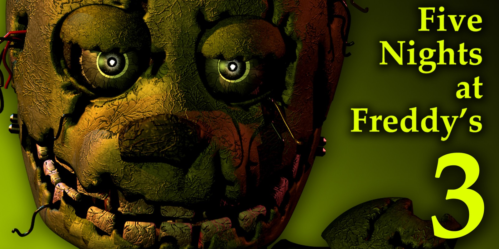

Five Nights at Freddy's 3
Five Nights at Freddy's 3 is de derde game in de beroemde horrorreeks. Dit keer speel je als bewaker in een horrortentoonstelling, Fazbear’s Fright, die geïnspireerd is door de gebeurtenissen in Freddy Fazbear's Pizza. In deze game draait alles om één vijand, Springtrap, en de dreiging van hallucinerende Phantom Animatronics. Deze gids geeft je de tips die je nodig hebt om de nachten te overleven.
1. Spelmechanieken
Five Nights at Freddy's 3 heeft nieuwe mechanieken die een andere aanpak vereisen:
- Camera’s: Volg Springtrap door het gebouw. Gebruik de audio-lokker om hem weg te lokken van je kantoor.
- Ventilatiesysteem: Sluit ventilatiekanalen om Springtrap de toegang tot je kantoor te blokkeren.
- Systemen beheren: Houd drie systemen operationeel: camera's, audio en ventilatie. Als een van deze faalt, moet je ze snel rebooten in het Maintenance Panel.
2. Vijanden
In tegenstelling tot eerdere games is er slechts één echte vijand: Springtrap. De rest zijn Phantom Animatronics, die je afleiden en storingen veroorzaken:
- Springtrap: Het belangrijkste gevaar. Houd hem op afstand door hem naar kamers te lokken met audio.
-
Phantom Animatronics: Ze veroorzaken jumpscares, maar kunnen je niet direct doden. Hun aanvallen leiden echter tot systeemstoringen. Let op:
- Phantom Freddy: Beweegt voor je raam. Kijk niet naar hem om zijn jumpscare te vermijden.
- Phantom Chica: Verschijnt op een arcade-machine. Kijk weg om haar te vermijden.
- Phantom Foxy: Verschijnt plotseling in je kantoor. Kijk snel weg om hem te laten verdwijnen.
- Phantom Balloon Boy: Verschijnt op de camera's. Schakel snel weg om een jumpscare te voorkomen.
- Phantom Mangle: Veroorzaakt storingen in de audio als ze verschijnt.
- Phantom Puppet: Kan je zicht ernstig beperken als hij geactiveerd wordt.
3. Nachtstrategieën
Elke nacht wordt uitdagender. Hier zijn enkele tips:
- Nacht 1: Deze nacht introduceert de basismechanieken. Springtrap verschijnt niet, dus gebruik dit om het systeem te leren kennen.
- Nacht 2: Springtrap verschijnt. Gebruik de audio om hem naar kamers weg van je kantoor te lokken, zoals Camera 8 of 9.
- Nacht 3-4: Phantom Animatronics worden actiever. Let op storingen en herstel snel systemen via het Maintenance Panel.
- Nacht 5: Springtrap wordt agressiever. Focus op het bijhouden van zijn locatie en het sluiten van ventilatiekanalen die hem toegang geven.
4. Audio en ventilatiebeheer
Het goed beheren van je systemen is cruciaal om te overleven:
- Audio: Gebruik het om Springtrap weg te lokken. Pas op dat het niet oververhit raakt; reboot het indien nodig.
- Ventilatie: Sluit strategische ventilatiekanalen om Springtrap's beweging te beperken. Als het ventilatiesysteem faalt, begint je scherm te flikkeren en kun je hallucinaties ervaren.
- Camera’s: Check regelmatig Springtrap's locatie, maar kijk niet te vaak naar Phantom Balloon Boy of andere Phantom Animatronics.
5. Minigames en het geheime einde
Tijdens het spelen krijg je toegang tot minigames. Door deze minigames te voltooien kun je het geheime "Good Ending" vrijspelen:
- Voltooi de minigames door verborgen interacties te ontdekken in de nachten.
- Verzamel en plaats de animatronic-maskers in de juiste volgorde om de zielen van de kinderen te bevrijden.
- Het geheime einde is het meest bevredigende en sluit een belangrijk hoofdstuk in het verhaal af.
6. Custom Night en uitdagingen
Hoewel FNaF 3 geen traditionele Custom Night heeft zoals eerdere games, kun je proberen de agressiviteit van Springtrap te maximaliseren voor een ultieme uitdaging.
Conclusie
Five Nights at Freddy's 3 biedt een unieke draai aan de serie met zijn enkele antagonist en Phantom Animatronics. Door strategisch gebruik te maken van de audio-lokker, camera's en ventilatiesysteem, kun je Springtrap op afstand houden en overleven. Vergeet niet: blijf kalm, let op je systemen en ontdek de geheimen die Fazbear’s Fright verbergt. Veel succes!